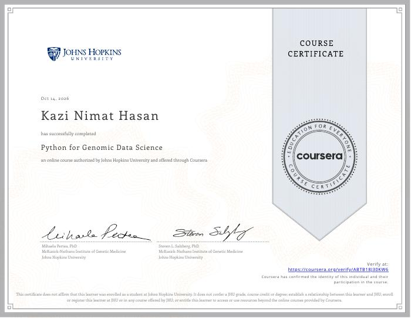
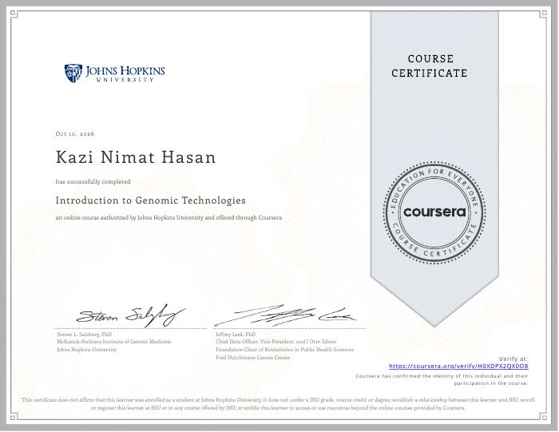
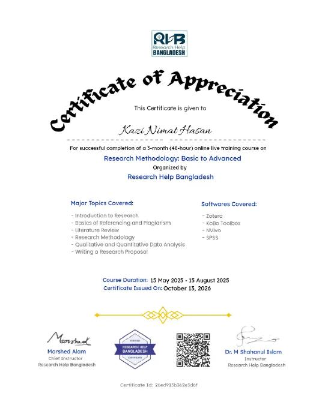

Introduction to Genomic Technologies
Johns Hopkins University · Coursera · Completed
View verified certificate ↗UNDERGRADUATE THESIS · COMPUTATIONAL BIOLOGY
My initial motivation came from the 2026 measles outbreak in Bangladesh and the question of whether host-response biology could offer complementary research directions beyond vaccination. I am building a target-blind, reproducible analysis of public bulk and single-cell RNA-seq data to investigate persistent host responses, bystander-cell signatures, and candidates for further study. This is computational hypothesis generation—not evidence of a validated treatment.
THESIS OVERVIEW
Research question: Which host-response signatures are persistent over infection time and independently supported by single-cell evidence, including in uninfected bystander cells?
Datasets: GSE229685 (bulk RNA-seq) and GSE168775 (single-cell RNA-seq).
Current status: The revised candidate-discovery analysis is in progress. Downstream network and docking work will follow the final, supported candidate set; earlier results are not treated as final.
The 2026 measles outbreak in Bangladesh prompted me to think about the gap between preventing infection through vaccination and the need for better understanding of disease biology after infection. I became interested in whether the host response to measles could reveal biological processes worth investigating as complementary host-directed therapeutic research.
Rather than beginning with a preferred gene or drug, I redesigned the analysis to identify candidates from the data first. The central question is whether persistent bulk-transcriptomic responses converge with cell-resolved evidence and whether some signatures are detectable in uninfected bystander cells.
Transcriptomic association can prioritize hypotheses, but cannot establish that a gene is causal or that targeting it will treat measles. Network analysis and docking, once completed, will remain exploratory and require independent validation.
Which genes show statistically supported and directionally persistent expression changes across post-infection time points?
Study-design timeline, PCA and QC plots, temporal expression heatmap, contrast tables, and persistent-gene trajectories will be linked or shown when the revised outputs are checked and ready. No older candidate list is presented as final.
Which cell populations show host-response changes, and are any responses detectable in GFP-negative bystander cells relative to mock and infected cells?
Donors were pooled before sequencing in the single-cell dataset, so donor-level replication is unavailable. Cell-resolved patterns can support biological context, but inferential strength is limited by the experimental design.
QC summary, UMAP with cell identities, infection-state composition, viral-feature checks, and differential-expression summaries will be added after final verification.
Which candidates have consistent support across independent bulk and single-cell analyses, and how sensitive are they to analytical choices?
The revised analysis is intended to prevent early gene selection from steering downstream work. Candidate tables and figures will be added only when the revised code and outputs are verified. A weak association with viral burden alone would not prove a paracrine mechanism or interferon independence.
After the unbiased candidate set is finalized, investigate whether supported genes form interpretable interaction modules and whether any encoded proteins merit exploratory structural analysis.
Status: planned/in progress. Previous network and docking outputs based on an earlier, incorrect candidate set are not presented as final evidence.
RELEVANT TRAINING

Johns Hopkins University · Coursera · Completed
View verified certificate ↗
Johns Hopkins University · Coursera · Completed
View verified certificate ↗KUET Central Computer Center / Bangladesh Computer Council EDGE Project · 80 hours
View certificate ↗